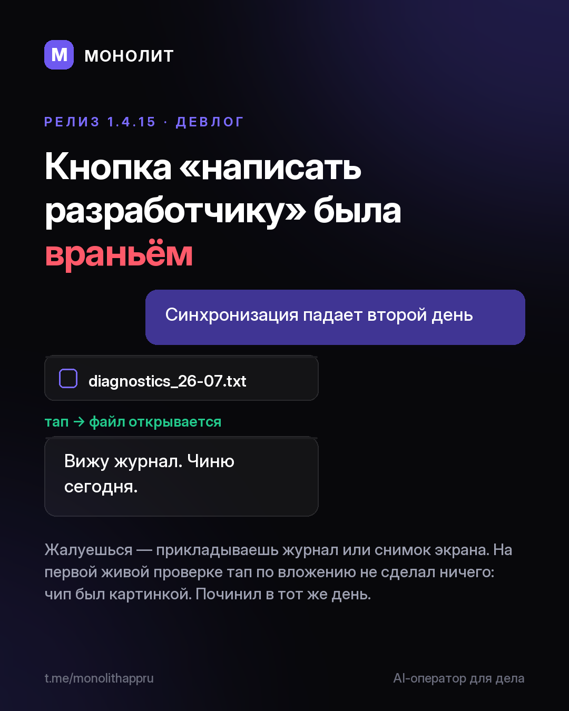

Дневник разработки · 02.08.2026
Кнопка «написать разработчику» была враньём (1.4.15 beta)

В приложении появился чат со мной: что-то сломалось — пишешь прямо из Профиля и прикладываешь журнал или снимок экрана. На первой живой проверке я тапнул по вложению, и не случилось ничего: чип был просто картинкой. Починил в тот же день, теперь файл открывается.
Документы без мелкого шрифта. Соглашение, политика и согласие на обработку данных лежат в Профиле и написаны по-человечески. При регистрации галочка не предустановлена: ставит человек, а не мы.
Тарифы показал заранее. База 449 ₽, Solo 1 490, Команда 2 990, Студия 7 990. Сейчас бета — всё бесплатно, у ранних останутся особые условия. Числа пока гипотеза, и я говорю об этом до того, как включу оплату.
Ассистент помнит свой вопрос, находит заказы по-русски в любом регистре и спрашивает перед удалением.
Windows-бета 1.4.15 уже вышла и обновится сама. Первый раз: сайт. Вопросы @sbphotoshoter
МОНОЛИТ — учёт заказов, клиентов и денег одной фразой. Windows и Android, бесплатная бета.
Скачать Читать канал